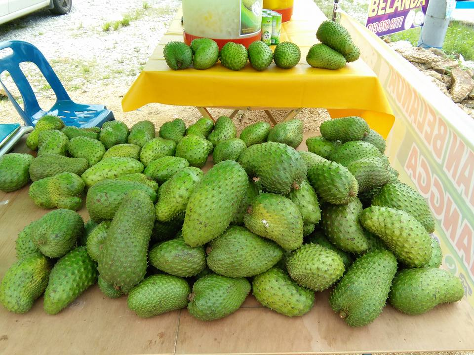
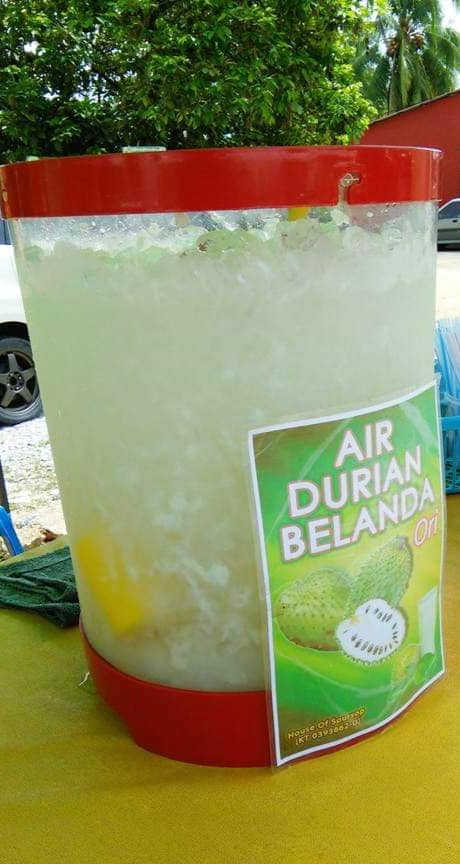
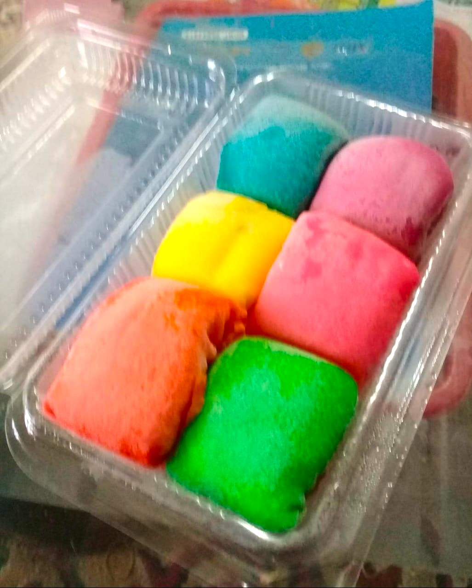
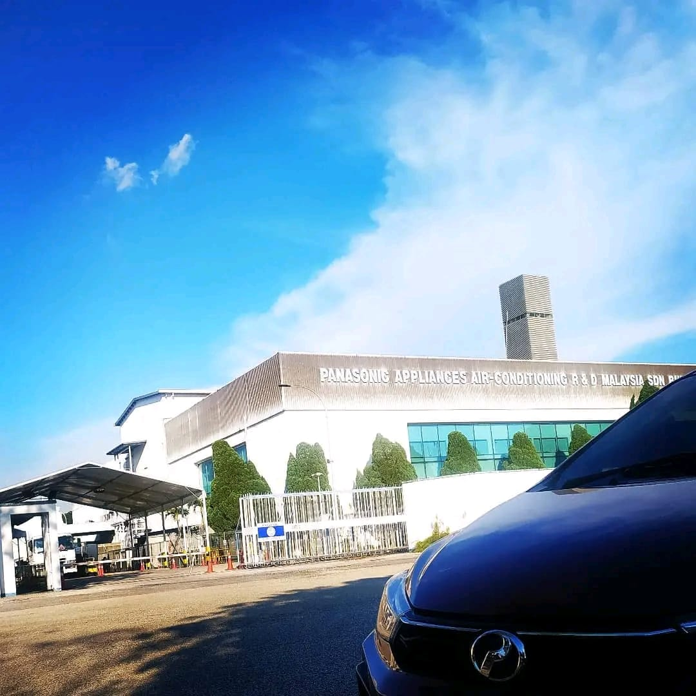

Here, is the details of my work experience throughout my life. It ain't much, but a honest work indeed.
After finishing secondary school at SMK Ketereh, I have not yet continued my studies to a higher level like my comrades-in-arms. This is because my late mother fell ill which made me have to take care of her. But, at the same time, I had time to work to increase the family's income. In 2017, I worked at a store selling a variety of soursop products, namely Abah's House of Soursop, which is located near my high school and my home.
Wanna know what my task at Abah's House of Soursop?
Store Assistant
Managing the store during the absence of manager
Providing Customer Service
Seller for product:
Soursop Fruits 
Soursop Puree
Soursop Tea Leaves
Soursop Drinks 
In Cup A (8oz) with price of RM3.00 per glass
In Cup B (12oz) with price of RM5.00 per glass
Bottled 250ml with price of RM5.00 per bottle
Crepes
Durian D24 flavour
Rainbow Mix flavour 
Mineral Water

In the year 2021, my mother passed away. Then I struggled to collecting the money needed to futher pursue my education to bachelor's degree level. I decided to work at factory at Selangor which is Panasonic Appliance & Air Conditioning Factory at Seksyen 21 Shah Alam.
There, I was stationed at Product Safety (P/S), managing my job as Operator of Indoor Units. I usually stay for Over Time (OT) as the payment is greater while also transfered to other production line if needed.